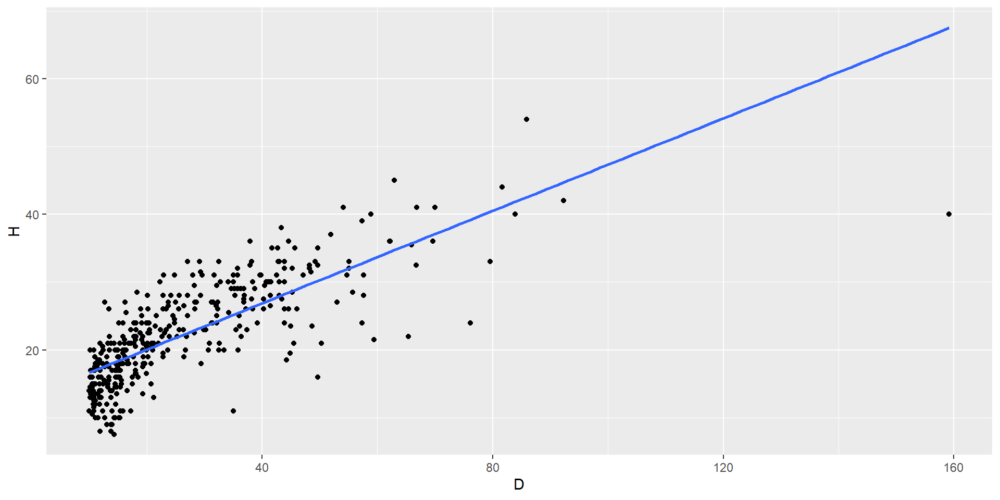
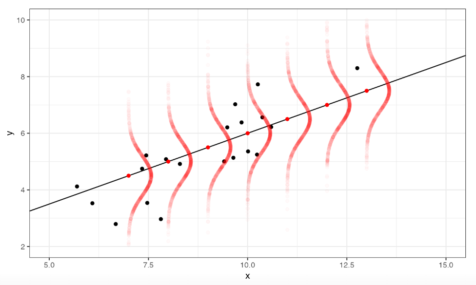
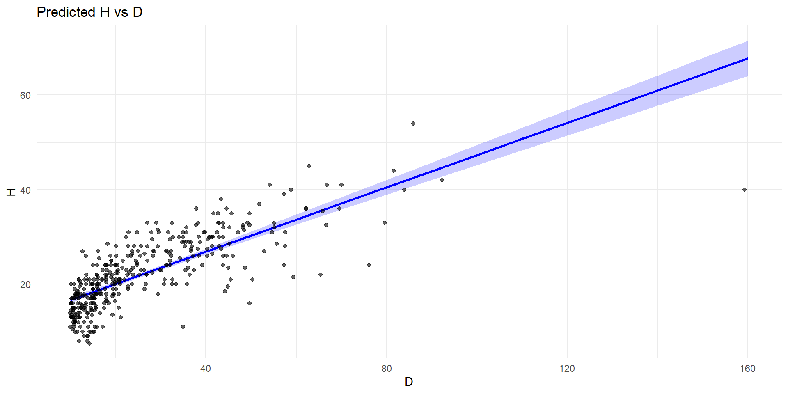
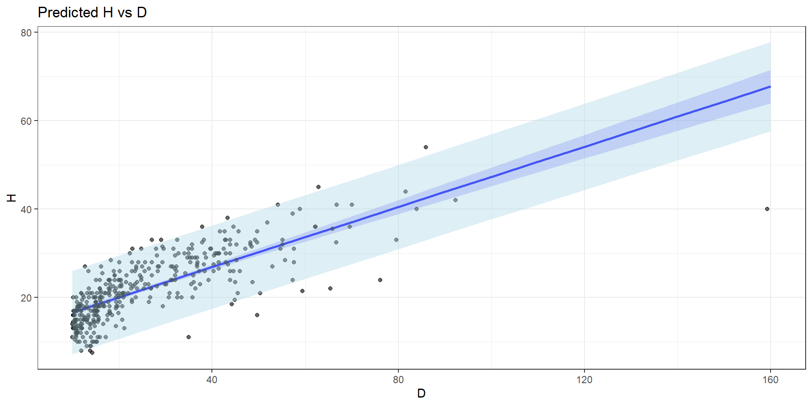
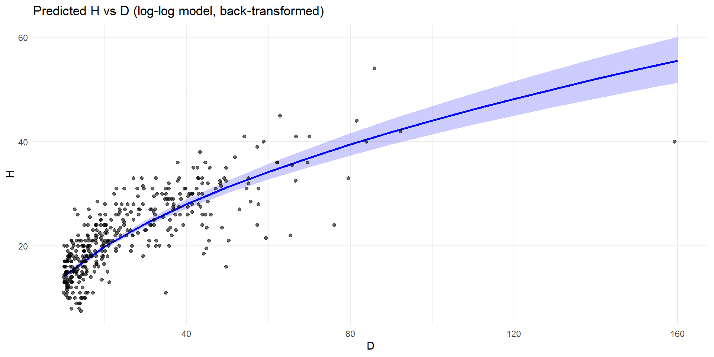
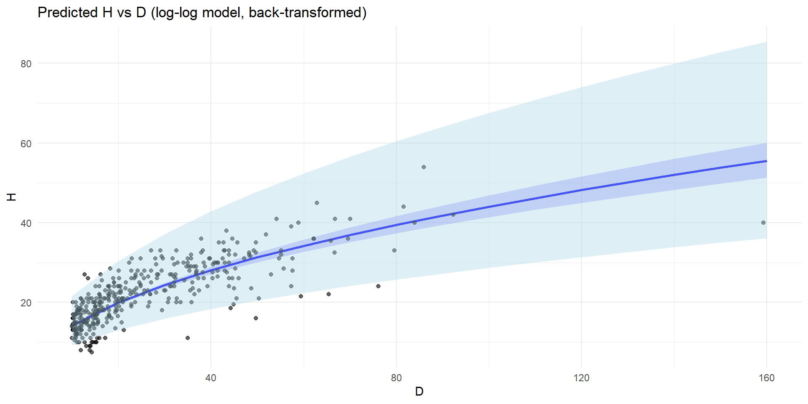
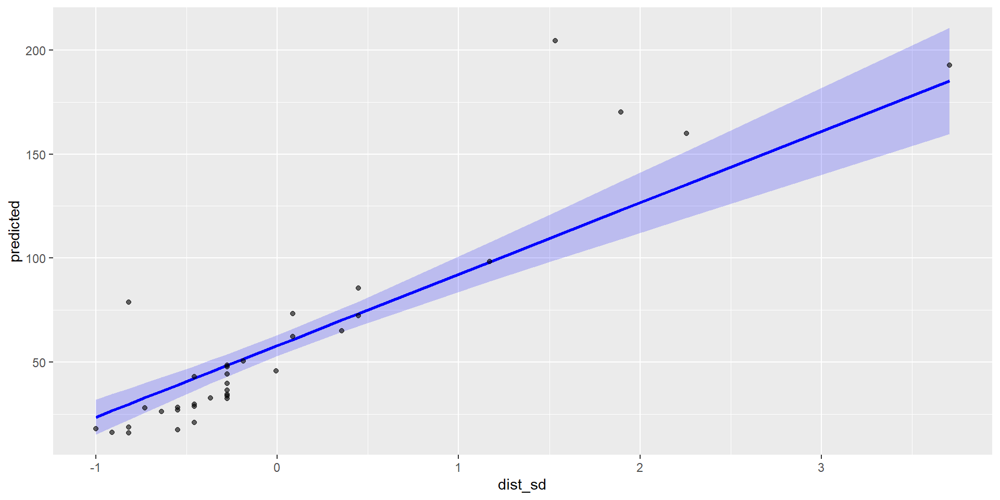
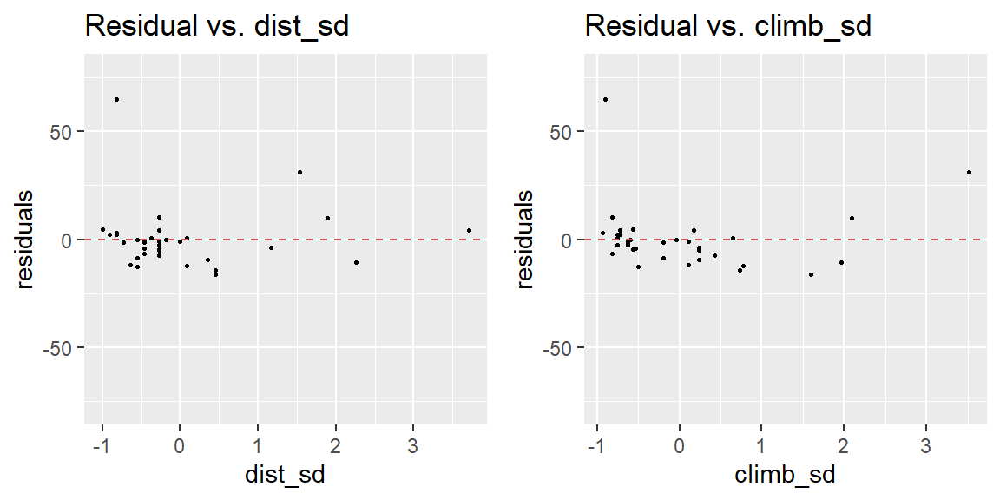
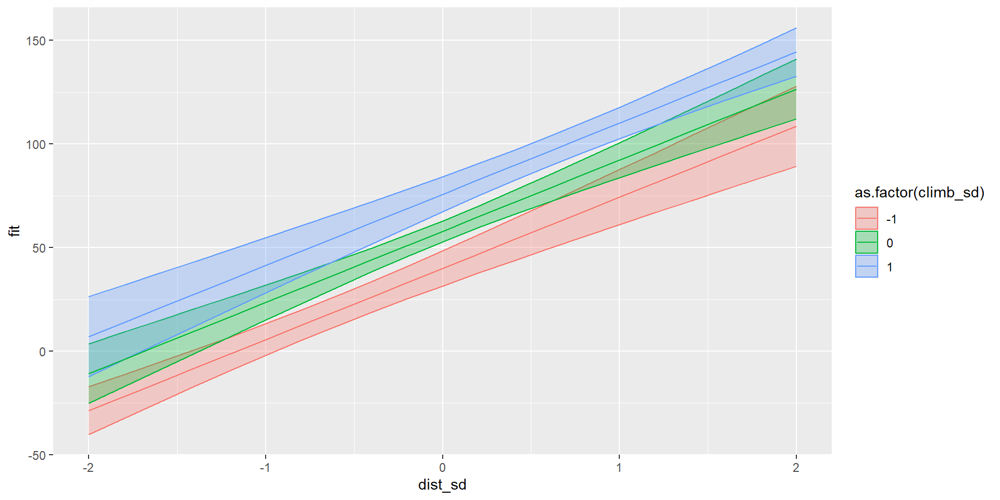

Cirad - UnB
2025-05-11
Let’s load the packages that we will use today
Study the relationship between several variables (without assuming causality)
Study the effect of numerical or categorical variables on another variables
Use these relationships to predict the values of the modelled variable for new observations.
A linear regression is a model of the mathematical relationship between:
A response variable, also called dependent variable
One or several explanatory variables, also called predictors or independent variables
We will work on a modified version of Nouragues tree data from the package BIOMASS (available here). These data have been modified to exclude the non fully determined trees, and add the family.
Heights and diameters of trees in two 1-ha plots from the Nouragues forest (French Guiana)
# A tibble: 454 × 8
plotId genus species D H lat long family
<chr> <chr> <chr> <dbl> <dbl> <dbl> <dbl> <chr>
1 Plot1 Qualea rosea 11.6 16 4.07 -52.7 Vochysiaceae
2 Plot1 Dicorynia guianensis 83.9 40 4.07 -52.7 Fabaceae
3 Plot1 Ocotea guianensis 36.8 27 4.07 -52.7 Lauraceae
4 Plot1 Cordia sagotii 13.5 20 4.07 -52.7 Boraginaceae
5 Plot1 Cecropia obtusa 17.8 24 4.07 -52.7 Urticaceae
6 Plot1 Licania membranacea 17.8 21 4.07 -52.7 Chrysobalanaceae
7 Plot1 Ocotea guianensis 15.9 22 4.07 -52.7 Lauraceae
8 Plot1 Qualea rosea 17.8 24 4.07 -52.7 Vochysiaceae
9 Plot1 Oenocarpus bataua 20.5 23 4.07 -52.7 Arecaceae
10 Plot1 Licania latistipula 11.1 15 4.07 -52.7 Chrysobalanaceae
# ℹ 444 more rowsLet’s explore the relationship between tree diameter and height graphically:

We want to model the relationship between D (the explanatory variable) and H (the response variable).
As our model has only one explanatory variable, it is called simple linear regression.
We want to model a tree dimension by another tree dimension. This is an allometric model. Allometric models are often used to predict a variable difficult to measure from a variable more broadly available
\[y = \alpha + \beta \times x + \epsilon\]
x is the response variable
y is the explanatory variable
\(\alpha\) is the intercept (the mean of Y when X = 0)
\(\beta\) is the slope of the relationship between X and Y
\(\epsilon\) is the residual of the model. \(\epsilon \sim \mathcal N(0, \sigma^2)\)
\(\alpha\), \(\beta\) and \(\epsilon\) are the parameters of the model
The model can also be written:
\[y \sim \mathcal N(\alpha + \beta \times x, \sigma^2)\]
\[y \sim \mathcal N(\alpha + \beta \times x, \sigma^2)\]
The model predicts a probability density of Y for any value of X normally distributed around the regression line.
 Source: E. Marcon
The mean value of Y for any value of X is the black line : \(\mu = \alpha + \beta \times x\)
The predicted probability density of Y are represented by the red dots: they are normally distributed around the mean with a variance \(\sigma^2\)
We use the function lm to fit a linear regression:
Syntax of the formula:
response variable ~ explanatory variable(s)
the intercept is implicit so H ~ D is equivalent to H ~ 1 + D
If we don’t want an intercept, we have to write H ~ 0 + D. The regression will go through the origin (0,0).
\[y = \alpha + \beta \times x + \epsilon\]
Call:
lm(formula = H ~ D, data = dt_nou)
Residuals:
Min 1Q Median 3Q Max
-27.4910 -2.8950 0.1666 3.0275 11.4801
Coefficients:
Estimate Std. Error t value Pr(>|t|)
(Intercept) 13.25635 0.43974 30.15 <2e-16 ***
D 0.34067 0.01415 24.07 <2e-16 ***
---
Signif. codes: 0 '***' 0.001 '**' 0.01 '*' 0.05 '.' 0.1 ' ' 1
Residual standard error: 4.777 on 389 degrees of freedom
(63 observations deleted due to missingness)
Multiple R-squared: 0.5983, Adjusted R-squared: 0.5972
F-statistic: 579.3 on 1 and 389 DF, p-value: < 2.2e-16Coefficients give the estimates of intercept (\(\alpha\)) and the slope (\(\beta\)).
intercept: the value of H for D=0 is 0.325
slope: for every increase of 1 cm DBH, increase of 0.32 m in height
A t-test is performed to see if there are significant (significantly different from 0).
Residual standard error is the estimate of the standard deviation of the residuals (\(\sigma\)).
\[y = \alpha + \beta \times x + \epsilon\]
Call:
lm(formula = H ~ D, data = dt_nou)
Residuals:
Min 1Q Median 3Q Max
-27.4910 -2.8950 0.1666 3.0275 11.4801
Coefficients:
Estimate Std. Error t value Pr(>|t|)
(Intercept) 13.25635 0.43974 30.15 <2e-16 ***
D 0.34067 0.01415 24.07 <2e-16 ***
---
Signif. codes: 0 '***' 0.001 '**' 0.01 '*' 0.05 '.' 0.1 ' ' 1
Residual standard error: 4.777 on 389 degrees of freedom
(63 observations deleted due to missingness)
Multiple R-squared: 0.5983, Adjusted R-squared: 0.5972
F-statistic: 579.3 on 1 and 389 DF, p-value: < 2.2e-16R2 (discussed after)
The F-statistic test if the model is significantly different from a null model, i.e. if it explains a significant amount of the variation on the response variable.
The R2 is the coefficient of determination: it represents the fraction of variance explained by the model. The closer the R2 is to 1, the greater the explanatory power of the model.
The adjusted R2 penalise the R2 by the number of explanatory variables (not relevant when there is just one explanatory variable).
The p-value indicates significance of the effect of the explanatory variable: this effect can be small yet highly significant => a small p-value is particularly important for hypothesis testing.
The R2 indicates the goodness of fit (how well the model fits the observed data) => a high R2 is particularly important for prediction.
The confidence interval is the interval of confidence of the mean predicted value of y (so of \(\mu\)).
To calculate it, we can use the function predict, with the argument interval = “confidence”, on new data that we create for the prediction:
# A tibble: 3 × 4
D fit lwr upr
<dbl> <dbl> <dbl> <dbl>
1 10 16.7 16.0 17.3
2 20 20.1 19.6 20.6
3 30 23.5 23.0 24.0We can then plot the confidence interval:

The prediction interval includes the uncertainty of the predicted mean (like the confidence interval) and the variability of individual prediction by taking into account the residual variance \(\sigma^2\). It is therefore wider than the confidence interval and contains most of the observations.
To calculate it, we can use the function predict, with the argument interval = “prediction”, on new data that we created for the prediction:
We can then add the prediction interval to the plot:

We need to check the model assumptions:
normality of the residuals
independence of the residuals
constant variance of the residuals (homoscedasticity)
linearity of the relationship between response and explanatory variables
Our model has problem of linearity and high leverage of some observations.
💡 A transformation of variables may help, let’s try to take the log of D and H:
\[log(H) = \alpha + \beta \times log(D)\]
which is equivalent to \(y = \alpha'x^\beta\) with \(\alpha' = e^{\alpha}\) because
\(log\big (\alpha'x^\beta \big) = log(\alpha') + \beta \times log(D)\)
This is a classical allometric model: it predicts that the height of the tree will increase less rapidly for trees with bigger DBH, which is consistent with what we expect.
Call:
lm(formula = log(H) ~ log(D), data = dt_nou)
Residuals:
Min 1Q Median 3Q Max
-0.86914 -0.10668 0.02985 0.14935 0.52921
Coefficients:
Estimate Std. Error t value Pr(>|t|)
(Intercept) 1.51202 0.06114 24.73 <2e-16 ***
log(D) 0.49363 0.01948 25.34 <2e-16 ***
---
Signif. codes: 0 '***' 0.001 '**' 0.01 '*' 0.05 '.' 0.1 ' ' 1
Residual standard error: 0.2155 on 389 degrees of freedom
(63 observations deleted due to missingness)
Multiple R-squared: 0.6227, Adjusted R-squared: 0.6217
F-statistic: 642 on 1 and 389 DF, p-value: < 2.2e-16Here we would prefer the log-log model because:
it is better regarding the model assumptions and reduced the leverage effect
it has a slightly better R2
it make more sense ecologically
⚠️ We will talk later about the AIC to compare models. We cannot use it here because the response variables are different (D vs log(D)).
We have seen how to plot the results, but here we need to back-transform them to their original (non-logged) scale. We use the function ggpredict from the package ggeffects:
Model has log-transformed response. Back-transforming predictions to
original response scale. Standard errors are still on the transformed
scale.# plot the results
g_preds_2 <- ggplot(preds, aes(x = x, y = predicted)) +
geom_line(color = "blue", linewidth = 1) +
geom_ribbon(aes(ymin = conf.low, ymax = conf.high), fill = "blue", alpha = 0.2) +
geom_point(data = dt_nou, aes(x = D, y = H), alpha = 0.6) +
labs(x = "D", y = "H", title = "Predicted H vs D (log-log model, back-transformed)") +
theme_minimal()
To add the prediction interval, we set the argument interval to “prediction”:

Why transform the data?
linearise a non-linear relationship (eg: quadratic relationship \(y = \alpha + \beta_1 \times x + \beta_2 \times x^2\), square root or log-transformation…)
improve normality and homoscedasticity of the residuals (eg: square root of log-transformation…)
reduce the influence of outliers (eg: log-transformation…)
We now want to model D as a function of the family:
\[D \sim \mathcal N(\alpha_{fam}, \sigma^2)\]
Let’s do it on the 3 most abundant families:
We can fit the model in the same way as for a numerical variable:
Call:
lm(formula = D ~ family, data = dt_nou_sub)
Residuals:
Min 1Q Median 3Q Max
-24.553 -10.565 -5.465 8.063 57.747
Coefficients:
Estimate Std. Error t value Pr(>|t|)
(Intercept) 21.46000 2.66733 8.045 1.44e-13 ***
familyFabaceae 13.09325 3.28794 3.982 0.000101 ***
familyLecythidaceae -0.09455 3.50556 -0.027 0.978515
---
Signif. codes: 0 '***' 0.001 '**' 0.01 '*' 0.05 '.' 0.1 ' ' 1
Residual standard error: 16.87 on 169 degrees of freedom
Multiple R-squared: 0.1326, Adjusted R-squared: 0.1223
F-statistic: 12.92 on 2 and 169 DF, p-value: 6.02e-06As for the Anova, the intercept corresponds to the first level, and the other coefficients show the difference of each levels with the first level.
⚠️ Don’t forget to check the model assumptions…
The simple linear regression with a categorical explanatory variable is equivalent to the ANOVA:
Df Sum Sq Mean Sq F value Pr(>F)
family 2 7352 3676 12.92 6.02e-06 ***
Residuals 169 48095 285
---
Signif. codes: 0 '***' 0.001 '**' 0.01 '*' 0.05 '.' 0.1 ' ' 1⚠️ The t-test performed by lm evaluates if the first level is different from the other ones, whereas the Tukey test on an ANOVA consider all pairs of levels.
A multiple linear regression is a regression with several explanatory variables:
\[y \sim \mathcal N(\alpha + \beta_1 \times x_1 + \beta_2 \times x_2 + ... + \beta_n \times x_n, \sigma^2)\] which we can also write:
\[y \sim \mathcal N(\alpha + \sum_{i=1}^n\beta_n \times x_n , \sigma^2)\] 💡 Explanatory variables can be numerical or categorical.
Let’s predict the best record time in bicycle races in Scotland (time), with the explanatory variables distance (distance) and altitude gained (climb), using the dataset hills from the MASS package:
Attaching package: 'MASS'The following object is masked from 'package:gtsummary':
selectThe following object is masked from 'package:dplyr':
selectWarning: 'MASS' namespace cannot be unloaded:
namespace 'MASS' is imported by 'unmarked', 'lindia', 'AICcmodavg' so cannot be unloaded dist climb time
Min. : 2.000 Min. : 300 Min. : 15.95
1st Qu.: 4.500 1st Qu.: 725 1st Qu.: 28.00
Median : 6.000 Median :1000 Median : 39.75
Mean : 7.529 Mean :1815 Mean : 57.88
3rd Qu.: 8.000 3rd Qu.:2200 3rd Qu.: 68.62
Max. :28.000 Max. :7500 Max. :204.62 We fit a multiple linear regression in the same way than a simple one:
Call:
lm(formula = time ~ dist + climb, data = hills)
Residuals:
Min 1Q Median 3Q Max
-16.215 -7.129 -1.186 2.371 65.121
Coefficients:
Estimate Std. Error t value Pr(>|t|)
(Intercept) -8.992039 4.302734 -2.090 0.0447 *
dist 6.217956 0.601148 10.343 9.86e-12 ***
climb 0.011048 0.002051 5.387 6.45e-06 ***
---
Signif. codes: 0 '***' 0.001 '**' 0.01 '*' 0.05 '.' 0.1 ' ' 1
Residual standard error: 14.68 on 32 degrees of freedom
Multiple R-squared: 0.9191, Adjusted R-squared: 0.914
F-statistic: 181.7 on 2 and 32 DF, p-value: < 2.2e-16To compare the effects of the explanatory variables, we can standardise them using the function scale:
Variables are scaled by subtracting the mean to each values and then dividing it by the standard deviation. This brings the variables to the same scale. They now have a mean of 0 and a standard deviation of 1:
Call:
lm(formula = time ~ dist_sd + climb_sd, data = hills)
Residuals:
Min 1Q Median 3Q Max
-16.215 -7.129 -1.186 2.371 65.121
Coefficients:
Estimate Std. Error t value Pr(>|t|)
(Intercept) 57.876 2.481 23.331 < 2e-16 ***
dist_sd 34.348 3.321 10.343 9.86e-12 ***
climb_sd 17.888 3.321 5.387 6.45e-06 ***
---
Signif. codes: 0 '***' 0.001 '**' 0.01 '*' 0.05 '.' 0.1 ' ' 1
Residual standard error: 14.68 on 32 degrees of freedom
Multiple R-squared: 0.9191, Adjusted R-squared: 0.914
F-statistic: 181.7 on 2 and 32 DF, p-value: < 2.2e-16Interpretation: When the explanatory variable increases by one standard deviation, the response increases by the value of the coefficient.
We can therefore compare the effect of explanatory variables.
The intercept is the value of the response when all explanatory variables are taken at their mean.
Here we see that a few observations have a strong effect, it would be worth inspecting these observations…
For multiple linear regression, it is important to also check the effect of each explanatory variable individually by plotting the residuals against them. We use the function gg_resX of the lindia package:
💡 the function gg_diagnose does all the diagnostic plots.
For multiple linear regression we need to check the absence of collinearity of the explanatory variables.
If an explanatory variable is a linear combination of the other, this impedes the model fitting.
⚠️ If the VIF of some explanatory variables is above 10 (or even 5), some explanatory variables should be excluded from the regression.
To represent graphically the effect of an explanatory variable, we can set the values of the other explanatory variables to a constant (for example their mean). Here we represent the effect of dist_sd setting climb_sd at the mean, -1 sd, + 1 sd:
# create new values for the prediction
hills_new_dist <- expand.grid( # create a table with all the combinaison of
dist_sd = seq(-2, 2, 0.2), # new values for dist_sd
climb_sd = c(-1, 0, 1)) # -1 sd, mean and +1 sd of climb_sd
# predict for new values
hills_pred_dist <- predict(mod_hills2, newdata = hills_new_dist, interval = "confidence")
hills_pred_dist <- cbind(hills_new_dist, hills_pred_dist)
# make the plot
p_mod2_dist <- ggplot(hills_pred_dist, aes(x = dist_sd, y = fit,
color = as.factor(climb_sd),
fill = as.factor(climb_sd))) +
geom_ribbon(aes(ymin = lwr, ymax = upr), alpha = 0.3) +
geom_line()
If we have many explanatory variables, we can plot all the coefficients with their confidence interval, using the function ggcoef_model of the package ggstats:

We can add an interaction term in the model to test if the effect of an explanatory variable depend of the value taken by another explanatory variable:
\[y = \alpha + \beta_1 x_1 + \beta_2 x_2 + \beta_{12} x_1 x_2 + \epsilon\]
which is equivalent to
\[y = \alpha + (\beta_1+\beta_{12} x_2) x_1 + \beta_2 x_2+ \epsilon\]
and
\[y = \alpha + \beta_1 x_1+ (\beta_2+\beta_{12} x_1) x_2 + \epsilon\]
\(\beta_{12}\) is the coefficient of the interaction. It represent the effect of \(x_2\) on the relationship between y and \(x_1\), and the effect of \(x_1\) on the relationship between y and \(x_2\).
To specify an interaction, we use * in the formula:
Call:
lm(formula = time ~ dist_sd * climb_sd, data = hills)
Residuals:
Min 1Q Median 3Q Max
-25.994 -4.968 -2.220 2.381 56.115
Coefficients:
Estimate Std. Error t value Pr(>|t|)
(Intercept) 52.304 2.793 18.728 < 2e-16 ***
dist_sd 32.776 2.965 11.053 2.78e-12 ***
climb_sd 10.411 3.742 2.782 0.00911 **
dist_sd:climb_sd 8.793 2.745 3.203 0.00314 **
---
Signif. codes: 0 '***' 0.001 '**' 0.01 '*' 0.05 '.' 0.1 ' ' 1
Residual standard error: 12.92 on 31 degrees of freedom
Multiple R-squared: 0.9392, Adjusted R-squared: 0.9333
F-statistic: 159.6 on 3 and 31 DF, p-value: < 2.2e-16We can make a graph of the predictions as we did for the model without interaction:
# create new values for the prediction
hills_inter_new_dist <- expand.grid( # create a table with all the combinaison of
dist_sd = seq(-2, 2, 0.2), # new values for dist_sd
climb_sd = c(-1, 0, 1)) # -1 sd, mean and +1 sd of climb_sd
# predict for new values
hills_inter_pred_dist <- predict(mod_hills_inter,
newdata = hills_inter_new_dist,
interval = "confidence")
hills_inter_new_dist <- cbind(hills_inter_new_dist, hills_inter_pred_dist)
# make the plot
p_mod_inter_dist <- ggplot(hills_inter_new_dist, aes(x = dist_sd, y = fit,
color = as.factor(climb_sd),
fill = as.factor(climb_sd))) +
geom_ribbon(aes(ymin = lwr, ymax = upr), alpha = 0.3) +
geom_line()
The prediction lines are no longer parallel, because of the interaction term.
To compare several models, we can use the AIC (Akaike information criterium).
The AIC take into account the likelihood of the model while penalising a more complex model (i.e. a model with more parameters) to avoid over-fitting.
To compare models using the AIC, they need to:
have the same response variable (not possible to compare a model with a transformation of the response variable with a model without transformation)
be fitted on the same data (so be careful with NAs)
The model with the lowest AIC is the best model (we usually consider a model difference of at least 2).
Let’s compare our models with and without interactions, and models with only one explanatory variable. We use the function aictab of the package AICcmodavg:
# fit two additional simple linear models
mod_hills_dist <- lm(time ~ dist_sd, data = hills)
mod_hills_climb <- lm(time ~ climb_sd, data = hills)
# make a list with all the models
list_mod <- list(hills_dist = mod_hills_dist,
hills_climb = mod_hills_climb,
hills2 = mod_hills2,
hills_inter = mod_hills_inter)
# compare the AIC
aictab(list_mod)
Model selection based on AICc:
K AICc Delta_AICc AICcWt Cum.Wt LL
hills_inter 5 286.29 0.00 0.97 0.97 -137.11
hills2 4 293.56 7.27 0.03 1.00 -142.11
hills_dist 3 313.59 27.30 0.00 1.00 -153.41
hills_climb 3 342.40 56.11 0.00 1.00 -167.81The model with interaction has the lowest AIC, it is therefore the best model.
An linear regression assumes that all observations are independent.
When observations grouped, they are not independent (e.g. several observations on a same site, on a same individual, in a same year…).
We can include the group as a categorical explanatory variable. This evaluate the effect of each group.
When the number of groups is too high and we are not interested in the effect of each group, we can use a linear mixed model.
Linear mixed models have a hierarchical structure.
One or more of their coefficients (the intercept or the response to explanatory variable) varies between groups j:
\[y_k \sim \mathcal N(\alpha_{j[k]} + \beta_1 \times x_1 + \beta_2 \times x_2 + ... , \sigma^2)\]
and this variation is modelled by a distribution:
\[\alpha_j \sim \mathcal N(\mu_{\alpha}, \sigma^2_{\alpha})\]
NB: here we represent the effect of the group only on the intercept, but we can include this effect on the other coefficients as well.
💡 See here for a detailed explanation of linear mixed model.
Some data are by nature not normally distributed, so we cannot model them with a normal distribution.
count data (e.g.: number of individuals of a species in a plot, number of birds heard in a given time) can be modelled with a Poisson distribution
success/failure data (e.g: presence/absence of a species in a plot, proportion of tree browsed in a plot) can be modelled with a binomial distribution
To know more about these distributions: see the Wikipedia pages, and the distribution zoo.
Generalised linear models (GLM) are an extension of linear models allowing different distributions of the response variable.
They have 3 component:
a linear predictor: a linear combination of explanatory variables
a distribution of individual responses around their mean
a link function between the predictor (defined on \(\mathbb{R}\)) and the mean response (not necessarily defined on \(\mathbb{R}\))
In the linear model seen before, the distribution is Normal and the link function the identity.
The logistic regression is a GLM with a binomial distribution and a logit link function. It models a probability of success.
The binomial distribution \(\mathcal{B}(n, p)\) represents the number of successes when performing n independent experiment having a constant probability of success p.It is a discrete distribution taking only positive integer values.
The logit link function links the modelled probability of success (which is between 0 and 1) to the linear predictor.
The Bernoulli distribution is a special case of a binomial when n=1.
💡 See here for a detailed explanation of the logistic regression.
The Poisson regression is a GLM with a Poisson distribution and a logarithm link function. It models the number of observations of an event in a defined sampling unit.
The Poisson distribution \(\mathcal{P}(\lambda)\) represents the mean number of observations \(\lambda\) in a sampling unit.
The logarithm link function links \(\lambda\) (which is positive) to the linear predictor.
💡 See here and here for detailed explanations of the Poisson regression.
Lilja D.J. & Linse G.M. * Linear regression using R - An introduction to data modeling* in English
DataCamp ressources on linear regression in Portuguese here, here and here